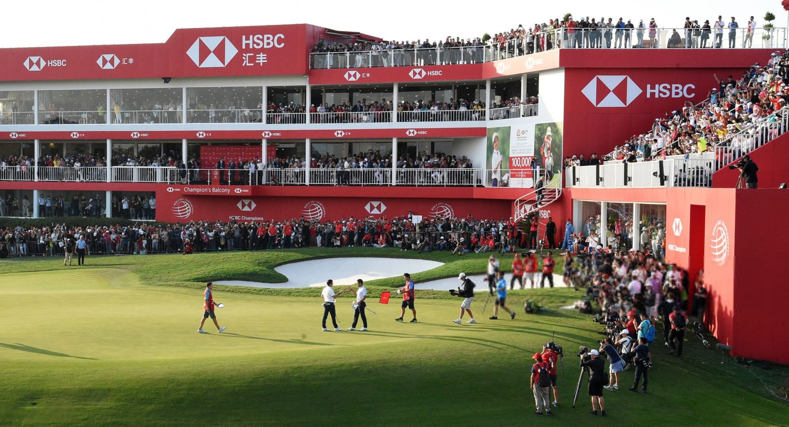

Signature roundSheshan Hill · Shanghai
Sheshan International
China's most famous course, and for two decades the host of its flagship world-tour event — the closing stretch around the old quarry has decided more champions than any other holes in Asia. A Nelson & Haworth parkland of mature camphors, sculpted bunkering and a château clubhouse, it is also a strictly private member's club. We arrange guest play on your behalf, with caddies and a long lunch on the terrace where the trophies are handed out.
- Designer
- Nelson & Haworth
- Setting
- Tournament parkland, quarry holes
- Claim to fame
- World Top 100 · host of a world-tour event
- Pair with
- The Bund, the old concessions, private dining